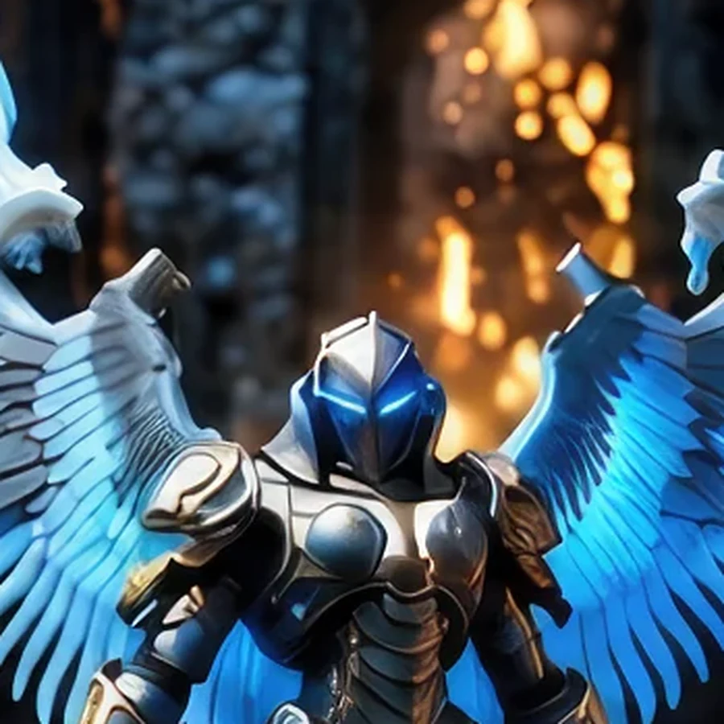
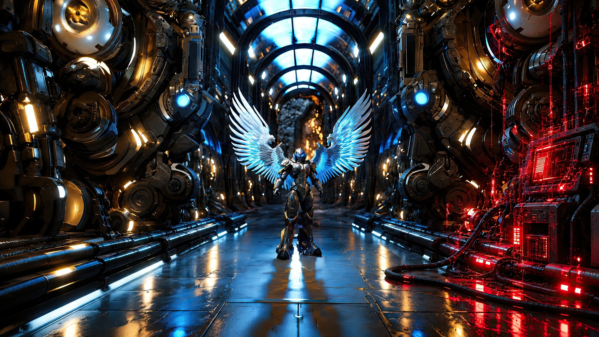
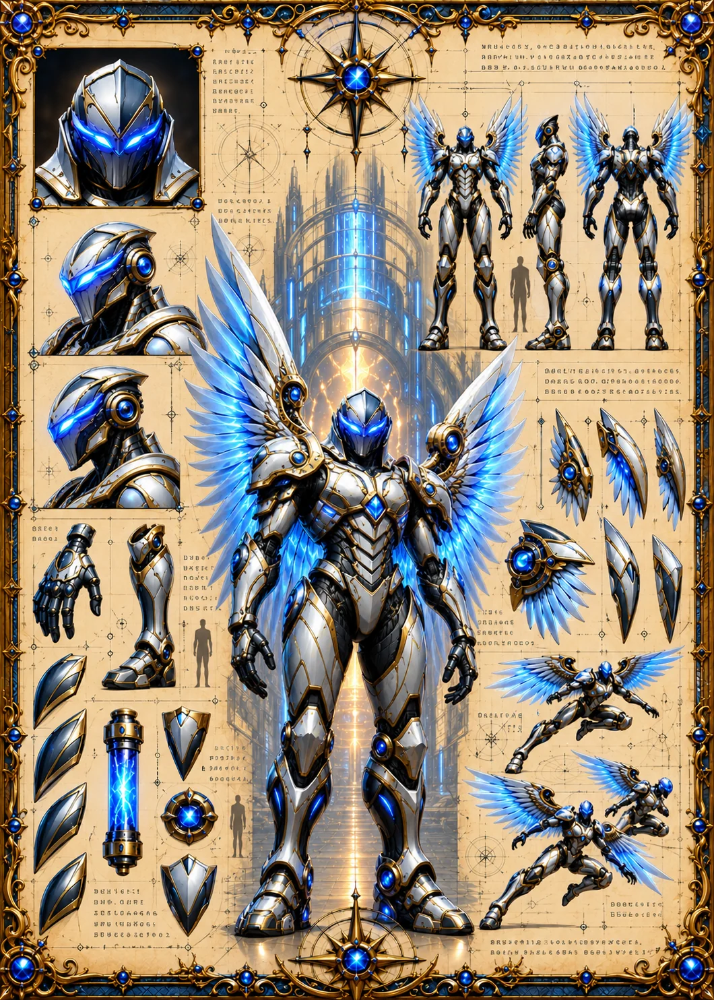

Field Observation
A large blue-white sphere hangs within the machinery on the left.
 ©
©
GENEZYS ARCHIVE · EARTH 1 · Legionnaire
Frostbite Saver
Identity & combat record
Archive node 01 / 05

Archive record
Orida's suit runs two cores that should never coexist, one burning and one frozen. The paradox nearly ended Orida's training before it began; now Fire Ice is the strangest weapon the Vanguard carries. Of all the Legions who would answer the Beacon, only Orida brings winter with the light.
Combat signature
Shines with paradoxical burning frost: Performs normal attack on 2 different enemies. Reduces Cosmara of the third enemy by 100.
Genezys 01:08 ™&©2026LEGIONS
Recovered visual record
Archive node 02 / 05

Full frame available // rotate device to landscape
Technical archive
Archive node 03 / 05

Classified field intelligence
Archive node 04 / 05
FIELD REPORT // ARTIFACT SIGHTING
Field Observation
A large blue-white sphere hangs within the machinery on the left.
Environment
Object Analysis
Key Findings
Motion archive
Archive node 05 / 05
Motion record not yet recovered